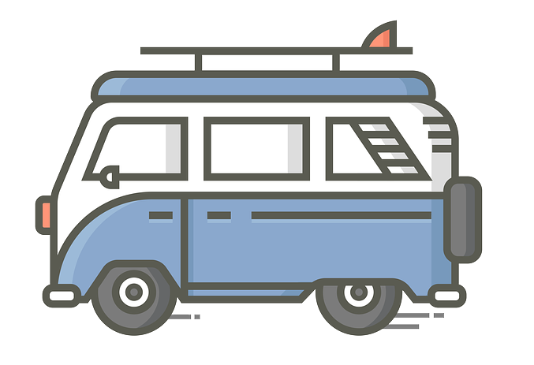

Julie Anderson
I'm married with 5 kids ranging in ages from 28 to 16. I live in Ammon, Idaho and commute to work each day. I love technology and enjoy sharing my love of technology with others.
Hobbies
My hobbies are reading, spending time with my family, and playing with my grandchildren. I googling and use AI to learn new things.